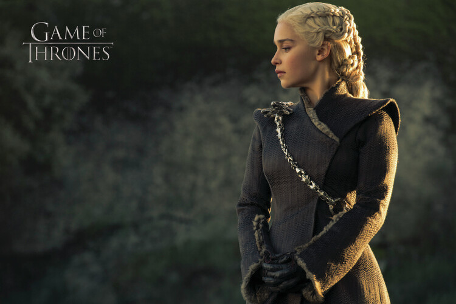

daenerys

La reina Daenerys Targaryen, también llamada Daenerys de la Tormenta, La que no Arde, Rompedora de Cadenas, Madre de Dragones y, de manera más informal, Dany, es la hija menor del rey Aerys II Targaryen y su hermana esposa, la reina Rhaella. Tras la Guerra del Usurpador, durante la que murieron sus padres y su hermano mayor Rhaegar, ella y su hermano Viserys vivieron en el exilio en varias Ciudades Libres.
Nacida en 284 d.C. en Rocadragón, la princesa Daenerys fue hija póstuma del rey Aerys II Targaryen y su hermana esposa, la reina Rhaella Targaryen. Daenerys nació en en medio de una impresionante tormenta que azotó la isla de Rocadragón, lugar donde se habían refugiado su madre, quien murió en el parto, y su hermano Viserys. Por esta razón es en ocasiones llamada "Daenerys de la Tormenta."
Poco después, Ser Willem Darry de la Guardia Real llevó a los hermanos desde Rocadragón a Braavos, huyendo del entonces rey Robert I Baratheon. Tras la muerte de Ser Willem, Daenerys lloró su pérdida y la casa de la puerta roja, donde vivió hasta que tenía alrededor de cinco años, se convirtió en el símbolo de la niñez que nunca tuvo.[20]
Los hermanos se consideraban los gobernantes legítimos de los Siete Reinos como el rey Viserys III y su heredera presunta, la Princesa de Rocadragón, Daenerys. En los años que siguieron, ella y Viserys vagaron por las nueve Ciudades Libres buscando apoyo, lo que le valió a Viserys el apodo de el Rey Mendigo.
Tras sucesivas humillaciones, su hermano Viserys creció amargado y obsesionado con su reclamo al Trono de Hierro. Danerys era el único objetivo conveniente para liberar su frustración, y con el tiempo incluso llegó a culparla por la muerte de su madre. Advertía regularmente a Daenerys de no "despertar al dragón", para no enfurecerle. A menudo hablaba de la importancia de preservar la pureza de la sangre real, a través de la antigua práctica del incesto dinástico, por lo Dany creció creyendo que algún día terminaría casándose con su hermano. Sabía de que la mayoría de los planes de Viserys para volver a tomar los siete reinos no eran realistas, y como no tenía recuerdos claros de Poniente, el sueño de su hermano significaba poco para ella. En lugar de ello, ansiaba regresar a la casa con la puerta roja de Braavos. Con la única compañía de su hermano su fuerte temperamento, Dany se fue convirtiendo en una joven temerosa y dócil.